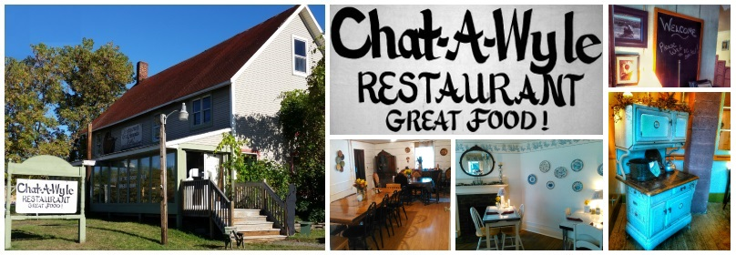

Welcome to Chat-A-Wyle Restaurant
at the Old Fox Farm
The Fox Farm began in 1791, when a land grant was given to James Glann for fighting in the American Revolutionary War.
I've been told that the property was one square mile. James' son took over the farm, which he in turn gave to his son George as a wedding present.
George and Maude had 16 children together. Gladys and Johns' lives here were short, but were surrounded by an abundance of love.
Fourteen other children grew up here to tell of a wonderful life with a mother and father who had enough love to go around.
The stories I have had the delight to hear are of the days when watching sunsets was how you passed the time away, and one took time to smell the flowers.
The Glann sisters I have gotten to know make one desire to have been part of their family. I will sometime soon write down these simple stories that will enrich your hearts.
You too will feel as though you belong. Enjoy the warmth of this house. It's yours to enjoy. We are all caretakers of what the Glann Family has left for us.
Soon there will be gardens and pear trees, watch us put together the past. Meanwhile, enjoy the good food, warm hearts, and some laughter with good friends.
It's not all lost...enjoy, relax, and take time.